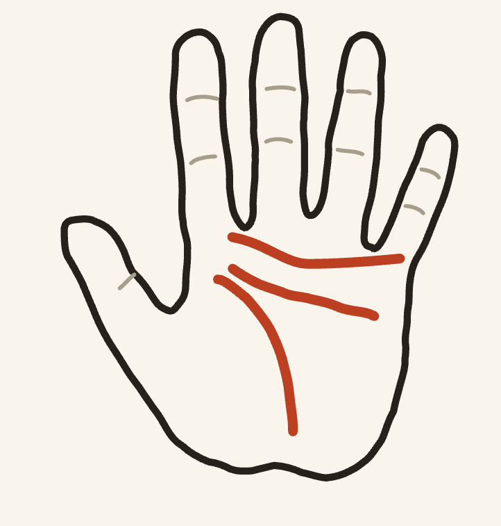
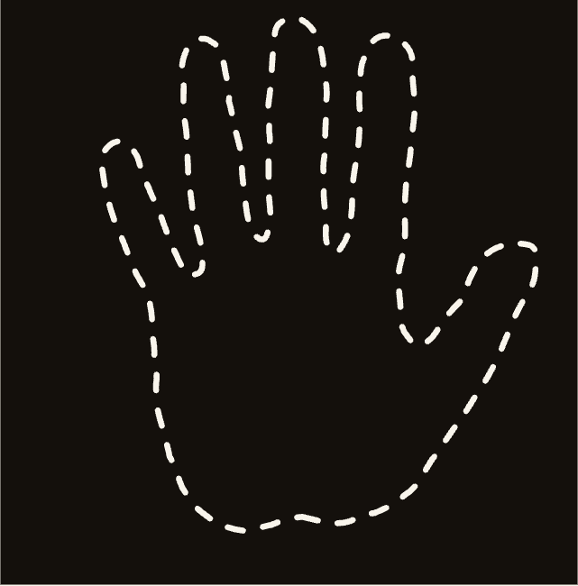

首页
拍摄
分析中
报告
历史
图鉴
关于
壳内按钮可真实跳转（快门→分析→报告）；顶部可直达任意页
9:41
··· ᯤ ▮
Palm Insight · 趣味掌纹解读
你的性格底稿 写在
掌心
拍摄一张手掌照片，AI 读取三条主线的形态，为你生成一份性格倾向报告。
PLATE Ⅰ — 三大主线

情感线 · 情感表达
思维线 · 思维风格
活力线 · 活力状态
拍摄手掌 · 开始解读
今日还可解读
3
次 · 每日 0 点重置
历史记录
·
关于与隐私
本内容基于传统掌纹文化的趣味解读，仅供娱乐，不构成任何科学依据或决策建议。
‹ 返回
拍摄手掌
‹

右手掌心正对镜头 · 五指自然张开
右手 · 常用手
左手
TIP · 宜
光线明亮均匀，掌心无阴影
TIP · 忌
移开戒指、手表等饰品
本内容基于传统掌纹文化的趣味解读，仅供娱乐，不构成任何科学依据或决策建议。
正在解读
READING · 约 10 秒
掌纹小议 · 1/4
解读完成后手掌照片立即删除，仅保留文字报告
PALM FIELD GUIDE
你的巴掌TI是
燎原星火
燎
心系·进取 · 掌纹稀有度 6%
"爱的时候，是真的烫。"
最合拍：磐石棋手 / 长途行者
右手 · 巴掌TI 报告
87
掌纹评分
情感线
85
思维线
72
活力线
78
总评 · SUMMARY
整体纹路清晰深长，三条主线走向分明。你的掌心透着一股稳中带劲的节奏感：想得清楚、做得踏实，情绪来得慢去得也慢，是朋友圈里公认的"靠谱担当"。以上为趣味解读，仅供参考。
四维速读 · PROFILE
性格
NATURE
沉稳务实 · 慢热长情 · 暗中较劲
事业
CAREER
思维线深长清晰，倾向逻辑驱动型选手：适合需要专注与规划的工作，遇到难题反而来劲。
感情
AFFECTION
情感线走势平缓，情感表达偏内敛：不擅长甜言蜜语，但认定了就很少动摇，属于细水长流型。
财富
FORTUNE
活力线弧度饱满，行动力在线：财务上倾向稳扎稳打，比起一夜暴富更喜欢看得见的积累。
场景速读 · IN PRACTICE
工
工作
WORK
思维线深长平直：线性执行力强，拿到清晰目标能一路推到底，开会习惯先听后说、后发制人。
活力线后劲足：适合长周期项目，起跑不快但越到后半程越稳，是接"烂尾盘"的人选。
留意：临时插队的需求会打乱你的节奏，学着说"可以排进来，但先挪掉一件"。
留意：你在会上太安静，好点子容易被嗓门大的同事截胡——重要方案提前一对一铺垫。
生
生活
LIFE
情感线平缓内敛：社交电量有限，两三好友深聊胜过十人饭局，散场后需要独处回血。
消费风格偏"看得见的积累"：冲动购物理你很远，但为质感买单从不手软。
留意：慢热长情是优点，但别把"再看看"拖成"来不及说"——想念谁就直接讲。
留意：周末躺着刷手机并不算回血，出门走走、动手做点东西对你更有效。
心
身心
MIND
纹路组合偏"高压运转型"：连续冲刺没问题，但断电也断得干脆，半天彻底放空才回得来。
压力上来的先兆是"话变少"：当你开始只回"嗯"，其实是内心在满负荷运转。
留意：情绪往里收、攒久了容易在小事上爆发，找个出口定期清空（写下来/说出来都行）。
留意：以上是生活方式参考，如有身体不适，请以专业人士意见为准。
掌上锦囊 · ADVICE
1
给自己留一段"不务正业"的时间，灵感往往从那里来。
2
重要决定睡一觉再做，你的第二天判断力通常更准。
3
情绪内敛是优点，但偶尔把话说出口，关系会更近一步。
分享给朋友 · 看看准不准
查看历史记录
·
再来一次
本内容基于传统掌纹文化的趣味解读，仅供娱乐，不构成任何科学依据或决策建议。
解读记录
照片即焚 · 仅存文字
8月17日 19:24
右手
87
纹路清晰深长，稳中带劲的节奏感：想得清楚、做得踏实，靠谱担当。
沉稳务实
慢热长情
8月16日 20:11
左手
81
情感线平缓内敛，细水长流型；活力线饱满，行动力在线。
细水长流
行动派
本内容基于传统掌纹文化的趣味解读，仅供娱乐，不构成任何科学依据或决策建议。
PALM FIELD GUIDE
掌纹人格图鉴
已解锁
3
/12 · 每次解读解锁一种
3
已收集
再测一次 · 解锁新类型
本内容基于传统掌纹文化的趣味解读，仅供娱乐，不构成任何科学依据或决策建议。
关于「掌纹测运」
v0.1.0
娱乐性质说明
本内容基于传统掌纹文化的趣味解读，仅供娱乐，不构成任何科学依据或决策建议。报告中的性格倾向描述均使用"倾向于""可能""仅供参考"等非绝对化表述。
隐私说明
· 手掌照片仅在解读过程中临时使用，分析完成后立即删除，云端不保留任何照片。 · 历史记录仅保存文字报告，可随时删除。 · 我们不收集姓名、手机号等个人身份信息。 · 相机与相册权限仅用于拍摄手掌照片，可在系统设置中随时关闭。
三大主线小知识
掌纹在胎儿期约第 13 周成形，终生基本不变。产品中的三条主线为：情感线（情感表达）、思维线（思维风格）、活力线（活力状态）——均是对掌纹形态的趣味化描述。
本内容基于传统掌纹文化的趣味解读，仅供娱乐，不构成任何科学依据或决策建议。